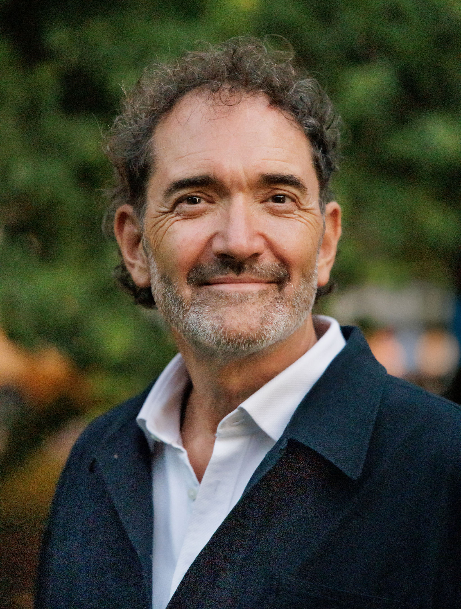

Team experiences that transform.
Real connection isn't talked about — it's experienced.
Momentum creates with teams through voice, movement, and music, to shift how they show up for each other.
Most team-building is forgettable. Yours doesn't have to be.
Here's what we've noticed: teams are drowning in communication tools but starving for real connection. People sit in meetings together but feel alone.
Traditional team-building treats the symptoms. We go deeper.
Slack messages and video calls aren't building the trust you need
Your best people are running on empty. You can feel it.
If you're bringing people together, make it count
Here's something we won't pretend we haven't read: 69% of employees aren't engaged. Disengagement costs the global economy $8.8 trillion a year. Organisations with genuinely engaged teams see 23% higher profitability, 14% more productivity, and 45% less turnover.
We know this. We also know that spreadsheets don't build teams. So we don't lead with KPIs. We lead with the thing that actually shifts them.
Want to see what this looks like for your team? Start a conversation
You've probably tried the escape rooms, the cooking classes, the motivational speakers. Your team smiled politely, went back to their desks, and nothing changed.
Momentum works differently.
It sounds unusual. It works.
Voice breaks barriers. When people express themselves together—breathing, sounding, singing—trust follows naturally. No performance needed, just presence.
Music is the thread. It lifts the energy, deepens the experience, and connects voice and movement into something felt on every level. A shared moment that stays with people long after.
Movement grounds. Get people out of their heads and into their bodies. Teams that move together bond on a level that talking can't reach. Accessible to everyone, regardless of fitness.
People arrive present. Conversations go somewhere.
The ones who never said much? They do now.
Not just for the day. People carry it into the following week.
Teams stop performing for each other and start working with each other.
Your team will be in the room with three of Australia's most experienced facilitators in voice, movement, and music. That's not something you get from a team-building company.

Voice & Expression
30+ years supporting people to find their voice and inspiring them to be comfortable outside the comfort zone.
Movement & Psychology
Psychology meets physical practice. Linda has this gift for creating space where people feel safe to let go. Yoga, QiGong, ZenThai—all in service of helping you feel at home in your body.
Music & Harmony
Jazz pianist, educator, quiet force. Dave's been teaching at Griffith Conservatorium for 20 years. His music creates the space where everything else becomes possible.
What we do isn't new age—it's ancient wisdom backed by modern research. Humans have always known that moving and singing together builds bonds. Now we can measure it.
Groups who moved synchronously showed greater social bonding and reduced inter-group bias. They felt "part of the same team."
Frontiers in Psychology, 2016Active music participation positively affects stress, immune function, social connection, and reduces feelings of isolation.
European Journal of Public Health, 2023MIT's Human Dynamics Laboratory found that communication patterns predict team success as reliably as all other factors combined.
MIT Human Dynamics LaboratoryWe get on a call — no pitch, no package-pushing. Just a genuine conversation about where your team is at and what would actually help.
We build your session from scratch. Every group is different, so every program is different. You'll see the shape of it before we show up.
All three of us are there, the whole time. Not one facilitator and two assistants — Darren, Linda, and Dave, each bringing their full expertise to your group.
You walk away with a summary of what we noticed and what we recommend — practical, specific, and written for your context. Not a template.
Every session is designed around your group. We start with a conversation to understand what you actually need.
A high-energy, precision-designed session that breaks through surface-level familiarity and creates genuine team cohesion — fast.
Our flagship programme. A complete, data-anchored team transformation experience designed to deliver measurable, reportable results.
Something bigger, longer, or completely different. Multi-day retreats, conference keynotes, ongoing series — we'll design it together around what your group actually needs.
Nobody is put on the spot. Ever. Darren has spent 30 years helping reluctant people find their voice — the skeptics are usually the ones who get the most out of it. We meet people where they are.
Everything is accessible. Linda adapts every movement to the individual. If you can breathe, you can participate fully.
We provide a post-session summary with observations and recommendations you can share with stakeholders. We also offer a free 20-minute call with your decision-makers to explain the approach and the evidence behind it.
Offsites, retreats, culture days
Conferences, festivals, gatherings
Schools, universities, staff wellbeing
Not-for-profits, support groups, retreats
They created an incredibly uplifting experience for our Carers through music and gentle movement. Their warmth, talent, and genuine compassion filled the room with joy, connection, and healing. It was a deeply meaningful experience that left everyone feeling inspired, re-energised, and truly valued — one our Carers will never forget.
We get it. You're sold, but your CFO needs a one-pager. We've put together everything they'll want to see — the research, the outcomes, the investment, and what makes this different from the team-building they've already said no to.
Download the One-Pager